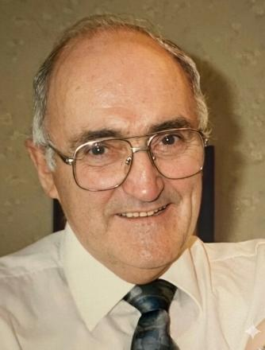

Remembering
Patrick Weldon Bray
November 17th, 1932 — April 28th, 2026
Begin Celebration
Sign Guestbook
Patrick Weldon Bray
A Celebration of Life
A LIFE HONOURED
Home
1 / 0
Back
Pause
Next
Guestbook
Fullscreen